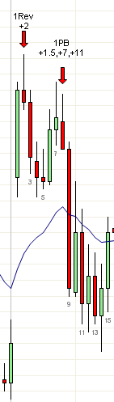

交易计划：交易区间日
https://ninetrans.blogspot.com/2011/08/trading-plan-trading-range-day.html
由于大多数交易日都是交易区间日，制定一个良好的交易计划至关重要。识别交易区间日要容易得多：如果不是趋势日，那很可能就是交易区间日。与其使用默认判断，我使用一个更简单的启发式方法。在最初的两次上下波动（包括任何跳空）之后，如果你回到了起点，那很可能就是交易区间日。例如，今天第一次向上的波动是跳空加上牛趋势K线b1，第二次向下的波动是b8。此时你回到了起点，所以这很可能是一个交易区间日，b1-b8是开盘区间。

在交易区间日，最初的几根K线很可能有大量重叠和影线，难以形成清晰的信号K线。一个解决方法是交易更小的时间周期，如这里的3分钟图。在5分钟图上这些入场点在K线中间，不合理，但在3分钟图上要清晰得多。一旦第一个小时左右的行情完成，你就不应该再看3分钟图了，因为那里的设定成功率可能较低。交易区间日通常在每个方向上都有两段式走势，然后换方向再走两腿，但整体上不会离区间太远。大多数波段入场可能失败，你的盈亏平衡止损很可能被触发。因此一个有效的计划是：抓住每一个两段式走势，在第二次推动时离场。例如，如果你在左边图表的3分钟b2做空，你应该在第二次推动结束时离场——要么在3分钟b9收盘时的强势中离场，要么在某根K线突破前一根K线的高点时（高于3分钟b14）离场。
然而，我不喜欢这种方式交易，因为我更喜欢更大的行情。一个可行的计划是在区间低点附近买入，在区间高点附近卖出。简单来说，交易区间的失败突破，并尝试持有到区间的另一端被测试。例如，5分钟b32给出了HOD b1的失败突破。正确的方法是做空，并尝试持有到b9低点被测试。
为了约束自己只在区间端点附近交易，将开盘区间分成三部分，标出中间部分。只在中间部分下方接受买入信号，在中间部分上方接受卖出信号。持有直到价格穿越到另一侧（b27）或第二次尝试反弹（b50）。忽略所有在中间区域发生的入场信号。这样即使在交易区间日你也能做波段，避免大多数震荡入场。当新的低点或高点（b30）扩展了区间时，相应调整你的区间框。
使用这个系统，你今天只会做多b17上方的信号，做空b32和b56下方的信号。这些恰好也是今天最适合波段交易的机会。注意这在TTR日可能不适用，当当天的区间在5个点或以内时。TTR日最好不要交易，因为任何交易的成功率都很低。
就像趋势终结为交易区间时你停止交易趋势一样，当区间突破为趋势时，你也需要停止交易区间。抓住第一个合理的回调，骑上新趋势，不要试图坚持认为它会回到交易区间。